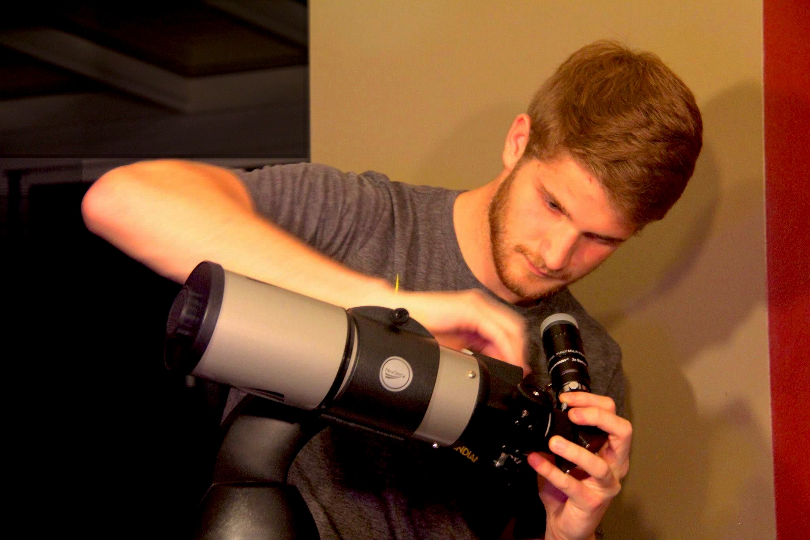

"Computer science is no more about computers than astronomy is about telescopes." - Edsger Dijkstra
Chris Gregory is a undergraduate student at Tufts University in Medford, Massachusetts. He is double majoring in Computer Science and Cognitive & Brain Sciences with an intended graduation in the Spring of 2018.
Chris's academic focus is at the intersection of algorithms and cognitive science, especially machine learning and artificial intelligence. After college he hopes to get a job as a full-time software engineer, making use of machine intelligence principles as well as an understanding of human behavior and cognition.